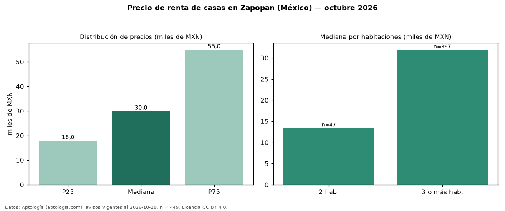

Precio de renta de casas en Zapopan (México) — octubre 2026
Con 449 avisos vigentes, el canon mediano de casas en renta en Zapopan (México) es MXN 30.000 al mes. Por metro cuadrado, la mediana es MXN 146/m² al mes (n = 424 avisos con área). Por precio mediano es la ciudad 5 de 5 de México con al menos 30 avisos de casas en renta (MXN). La mediana de toda la vivienda en renta de Zapopan (MXN) es MXN 28.000; las casas quedan +7 %. La mitad central de los avisos va de MXN 18.000 a MXN 55.000 (razón 3,1), una dispersión alta. El área mediana anunciada es 218 m². El segmento con más oferta es el de 3 o más habitaciones (397 avisos, mediana MXN 32.000); pasar de 2 habitaciones a 3 o más habitaciones cambia la mediana +137 %. Datos: Aptología (aptologia.com), CC BY 4.0 — https://www.aptologia.com/. Archivos: PDF, CSV con las cifras y gráfica PNG.

| Avisos únicos | 449 |
|---|---|
| Percentil 25 | COP 18.000 |
| Mediana | COP 30.000 |
| Percentil 75 | COP 55.000 |
| Mediana por m² | COP 146 |
Fuente: avisos vigentes de portales inmobiliarios recopilados por Aptología, deduplicados (mínimo 30 avisos únicos por celda). Precios pedidos, no cerrados. Fecha: 2026-10-18.